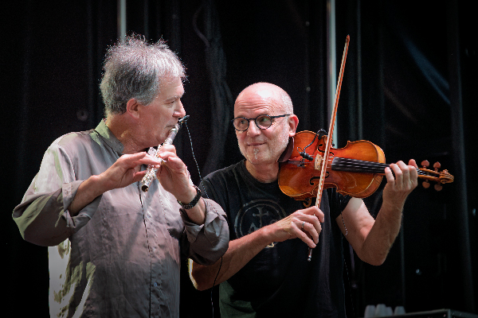
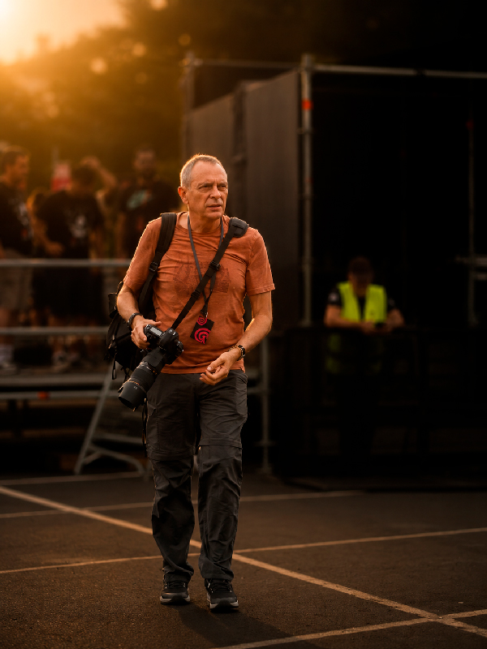
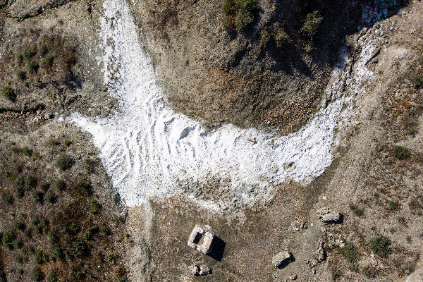
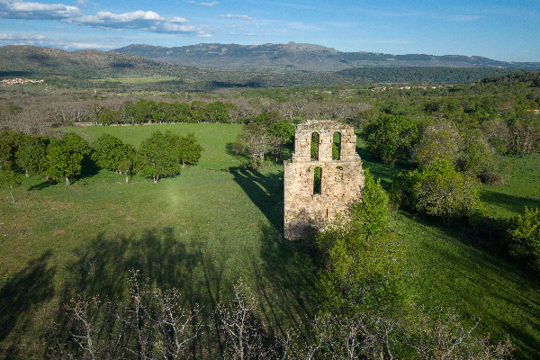

Gwendal en Aranda de Duero: cuando la memoria baila
Crónica fotográfica de una noche en la que el tiempo se detuvo y la música celta volvió a demostrar que no tiene edad.
Fotografía de conciertos, naturaleza y memoria del territorio

Fotógrafo profesional con base en Madrid, especializado en música folk en vivo, naturaleza y documentación de patrimonio histórico olvidado. Más de cuatro décadas convirtiendo instantes en imágenes que perduran.
Fotógrafo habitual de Gwendal durante más de una década y autor del próximo libro sobre la historia del grupo bretón. Mi trabajo combina la inmediatez del directo con la paciencia que exige el paisaje.
Colaboro con festivales, managers, publicaciones especializadas y cualquier proyecto que merezca una mirada honesta.
Durante más de una década he sido el fotógrafo habitual de Gwendal, el grupo bretón de música celta fundado en 1972. Este trabajo culmina en un libro que recoge más de doscientas fotografías inéditas, testimonios y la historia completa de la banda.
Un documento visual único sobre uno de los grupos más importantes de la música folk europea.

Crónica fotográfica de una noche en la que el tiempo se detuvo y la música celta volvió a demostrar que no tiene edad.

Un paisaje industrial olvidado a pocos kilómetros de Madrid que guarda una historia silenciosa entre cristales de sal.

Un pueblo que el tiempo olvidó en el mapa pero no en la memoria de quienes lo habitaron. Imágenes y silencios.
Copias de edición limitada con calidad museística. Cada fotografía está firmada, numerada e impresa sobre papel de archivo de alta calidad.
Paisajes, conciertos y momentos irrepetibles. Imágenes que perduran.
Explorar galería y comprar →¿Tienes un proyecto fotográfico en mente?
Cuéntamelo.